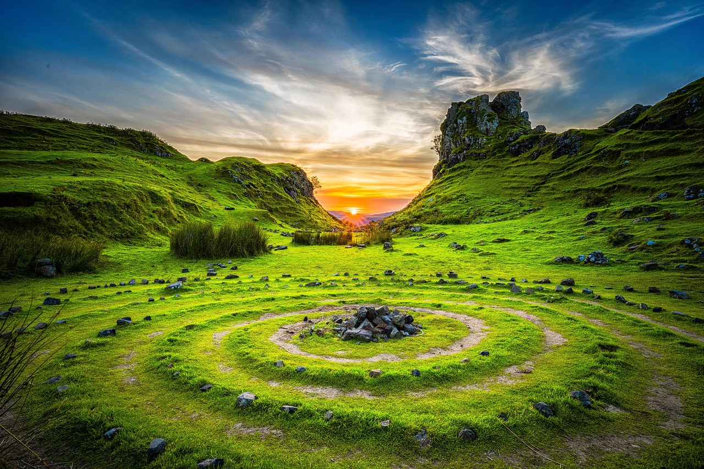

Introduction
亿万年地质奇观的天然博物馆
关山国家地质公园位于新乡市辉县上八里镇，是南太行地区最具代表性的地质公园之一。公园以"石柱林、天生桥、红石峡"三大地质奇观著称，是地质学家研究太行山形成演变的天然实验室。
关山的地质历史可追溯到25亿年前，这里完整地保留了从太古界到新生界的地层序列。公园内的石柱林由数百根形态各异的石柱组成，最高的达数十米，气势恢宏。天生桥是一座天然形成的石拱桥，跨度约20米，是大自然精雕细琢的杰作。
红石峡是关山的另一大亮点，红色砂岩峡谷蜿蜒曲折，溪水穿行其间，景色秀美。公园内还有丰富的动植物资源，植被覆盖率达95%以上，是天然的大氧吧。关山也是中国地质学家命名"太行山"这一地质概念的重要参考地。
Visitor Info
🕐
建议时长
2-3小时
🎫
门票
约 ¥40
📍
地址
辉县·上八里镇
🚌
交通
新乡拼车约1.5h
⏰
开放时间
08:00-17:30
🪨
特色
石柱林·天生桥
Highlights
核心看点
🪨 石柱林
数百根天然石柱错落林立，最高的达数十米。石柱形态各异，有的如宝剑直插云霄，有的如巨笋破土而出，是关山最震撼的地质奇观。
🌉 天生桥
天然形成的石拱桥，跨度约20米，桥下溪水潺潺。这是水蚀和风化作用共同塑造的杰作，历经数百万年才形成。
🔴 红石峡
红色砂岩峡谷蜿蜒曲折，溪水在红色岩床上流淌，形成碧水红石的强烈色彩对比。峡谷两侧植被茂密，是摄影爱好者的天堂。
Gallery
关山风光
